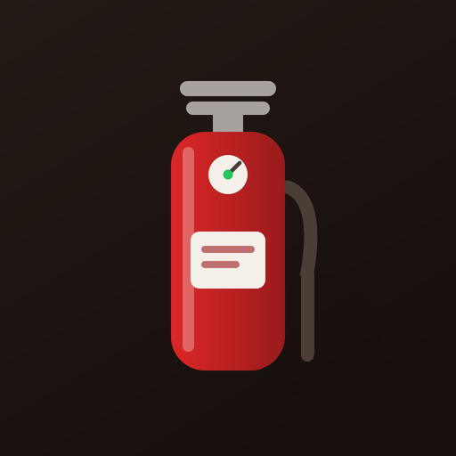
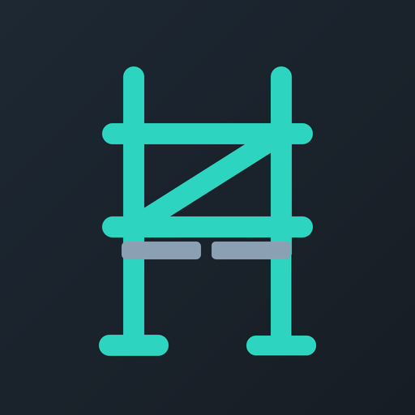
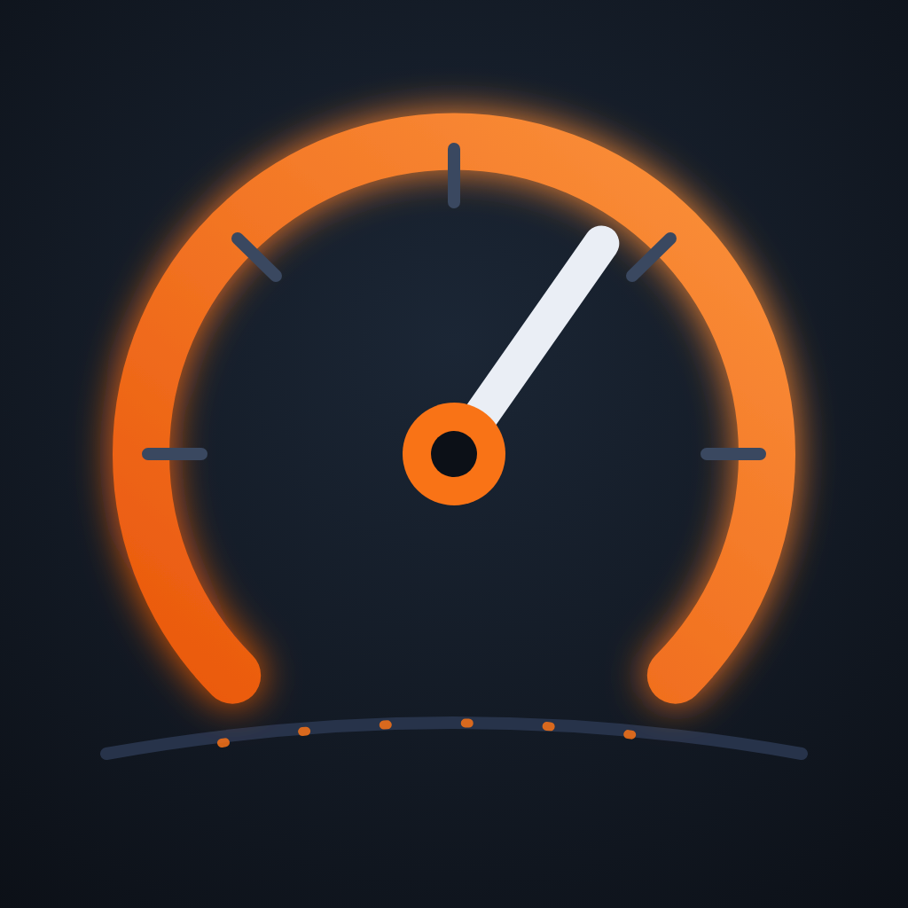
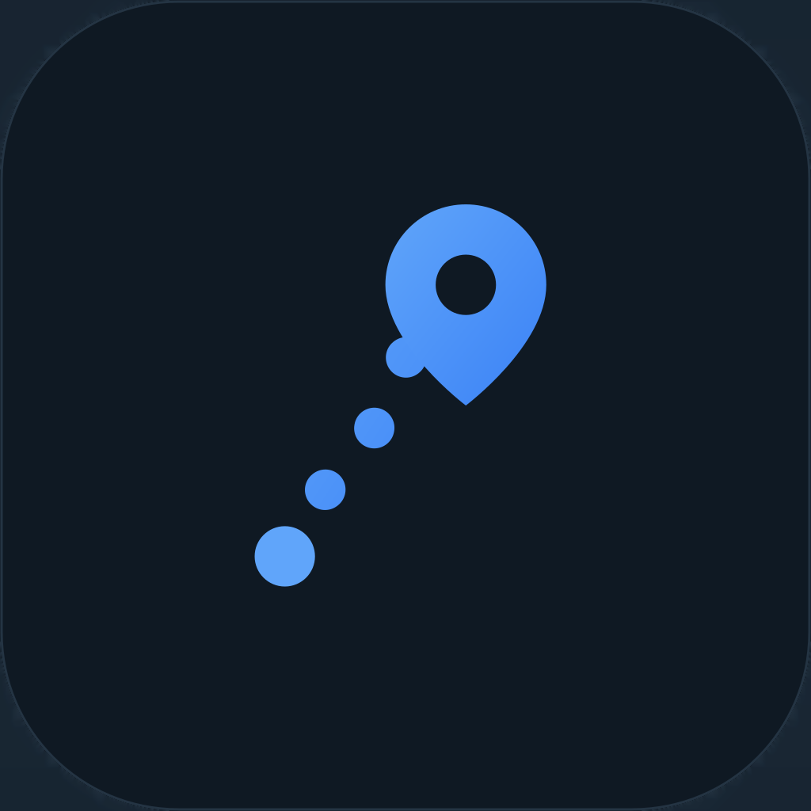
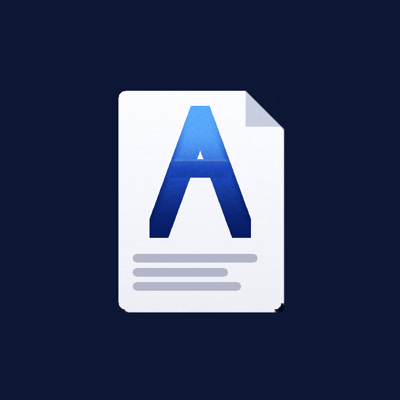

Prüfpflichten im Betrieb — verständlich erklärt
Wer muss was wie oft prüfen, wer darf prüfen und was gehört ins Protokoll? Unsere Ratgeber fassen die Vorschriften für typische Prüfpflichten in Handwerk, Facility-Management und Kommunen zusammen — mit Fristen, Checklisten und Antworten auf die häufigsten Fragen.
Elektrik & Brandschutz
DGUV V3 Prüfung ortsveränderlicher Geräte
Fristen, Messwerte und Prüfprotokoll für elektrische Betriebsmittel.
PrüfDexDGUV V3 Prüffristen
Richtwerte je Einsatzumgebung als übersichtliche Tabelle.
PrüfDex
Feuerlöscher prüfen
Fristen nach ASR A2.2 und DIN 14406-4, Sachkundiger, Dokumentation.
FeuerDexAbsturz, Leitern & Gerüste
Leitern & Tritte prüfen
Fristen, befähigte Person und Dokumentation nach BetrSichV und DGUV I 208-016.
LeiterDex
Gerüstprüfung nach TRBS 2121-1
Prüfung nach Montage, Kontrolle vor Benutzung, Prüfung nach Sturm.
GerüstDexPSA gegen Absturz prüfen
Jährliche Prüfung, Sachkundiger nach DGUV G 312-906, Ablegereife.
GurtDexGebäude, Lager & Außenanlagen
Torprüfung nach ASR A1.7
Kraftbetätigte Tore und Türen jährlich prüfen — Prüfbuch und Checkliste.
ToreDexRegalinspektion nach DIN EN 15635
Fristen, Experteninspektion und Dokumentation im Lager.
RegalDexSpielplatzkontrolle nach DIN EN 1176
Pflicht, Fristen und die drei Inspektionsarten.
SpielDexRäum- und Streupflicht
Wer haftet — und wie man den Winterdienst gerichtsfest dokumentiert.
WinterDexBaumkontrolle & Verkehrssicherung
Kontrollpflichten für Kommunen und Grundstückseigentümer.
BaumDexFuhrpark

UVV-Prüfung für Firmenfahrzeuge
Pflichten des Fuhrparks nach DGUV Vorschrift 70.
KfzDexFührerscheinkontrolle im Betrieb
Pflicht, Intervall und Dokumentation nach § 21 StVG.
KfzDex
Fahrtenbuch richtig führen
Anforderungen, Pflichtangaben und Alternativen.
TourDexArbeitsschutz & Dokumentation
Jährliche Unterweisung im Arbeitsschutz
Pflicht, Inhalte und Nachweis nach § 12 ArbSchG.
SchutzDexUnterweisungsthemen
Was in die jährliche Unterweisung gehört.
SchutzDex
Aufbewahrungsfristen für Geschäftsunterlagen
Übersicht mit Tabelle, inklusive verkürzter Fristen.
DokuDexBaustellendokumentation
Was festgehalten werden sollte — und warum.
CraftDexDie Ratgeber geben die genannten Vorschriften allgemein verständlich wieder und ersetzen keine Rechtsberatung. Maßgeblich sind die jeweils aktuellen Fassungen sowie die betriebliche Gefährdungsbeurteilung.